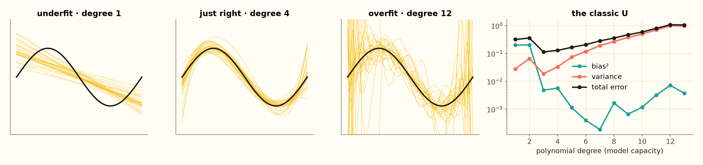
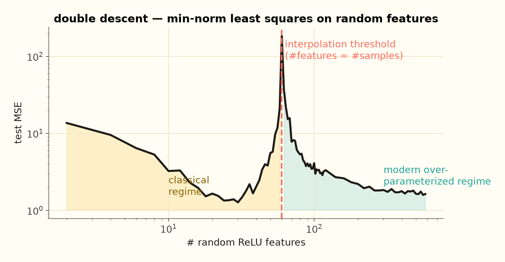
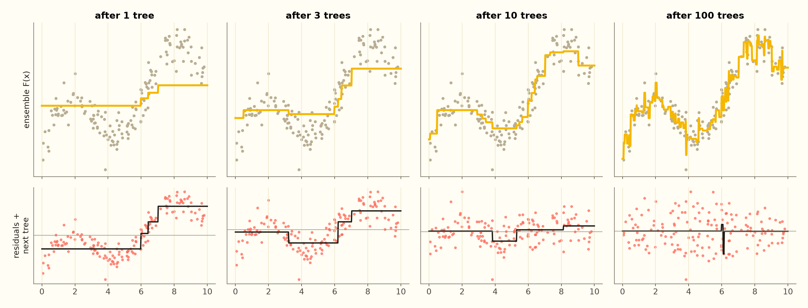
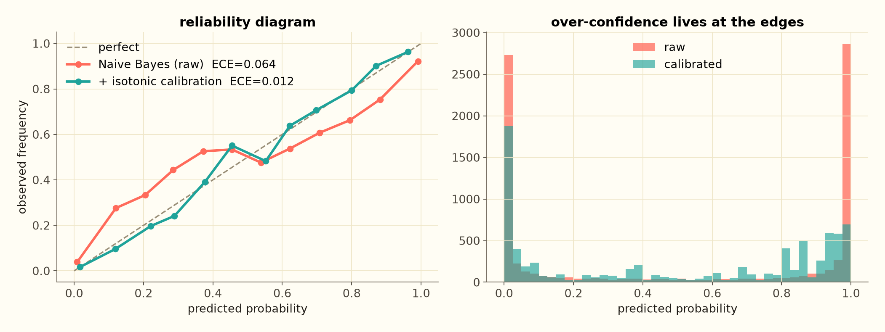
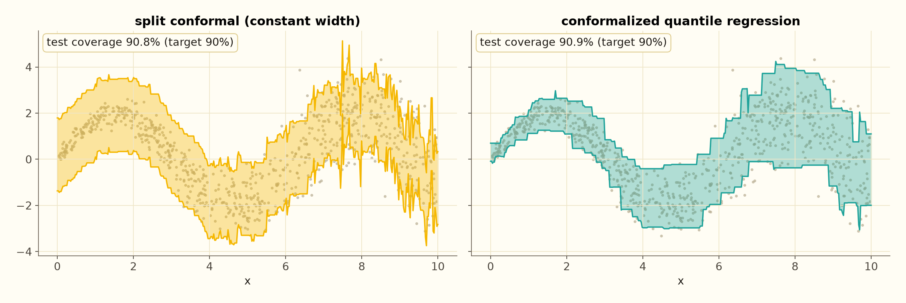
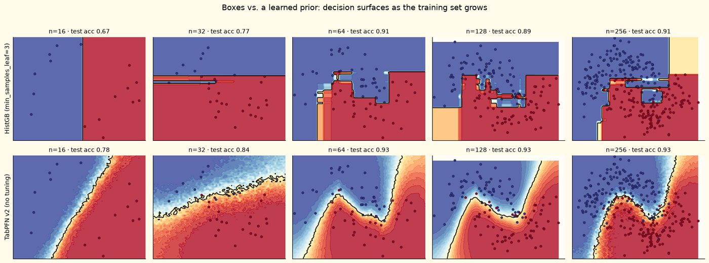

00Today's flight plan
Deep learning gets the headlines, but on tabular data (most of the data in most companies) gradient-boosted trees are still the default to beat. Today you'll learn them well enough to implement them in 30 lines, and you'll learn the two skills that separate a good ML engineer from a great one: quantifying uncertainty and explaining predictions.
- On tables, a well-tuned gradient-boosted tree ensemble is still the model to beat.
- A probability is only useful if it's calibrated. Check a reliability diagram before you trust a score.
- Conformal prediction wraps any model in intervals or sets with a guaranteed coverage rate.
Why the classic U-curve is only half the story
Residuals, shrinkage, early stopping, LightGBM showdown
Calibration, then conformal prediction
ECE, temperature scaling, CQR, prediction sets
Exact Shapley values; in-context learning on tables
Leaderboard challenge with a twist
01Bias, variance & double descent
Imagine retraining your model on a fresh sample of data, over and over. The predictions wobble. Variance measures how much they wobble. Bias measures how far the average prediction sits from the truth. For squared error, the expected test error splits exactly into three parts:
The expectation is over training sets. Noise σ² is the floor: no model can beat it.

Don't take our word for it. Drag the sliders below. Push the degree up until the refits go wild, then add a little ridge penalty and watch the variance collapse.
…but then deep learning broke the U-curve
Classical theory says test error rises forever as capacity grows. Yet modern networks with far more parameters than data points generalize well. The resolution is double descent (Belkin et al., 2019; Nakkiran et al., 2019). Error peaks at the interpolation threshold, where the model has just enough capacity to fit the training data exactly, and then falls again as capacity keeps growing, because among the many solutions that fit the data, the optimizer's implicit bias picks a smooth, minimum-norm one.

"More parameters means more overfitting" is a rule for the classical regime. Past the interpolation threshold, implicit regularization (from the optimizer, early stopping and architecture) governs generalization. Explicit regularization such as ridge or weight decay smooths out the spike.
02Gradient boosting, demystified
Boosting is gradient descent in function space. Start with a constant prediction. At each round, compute how the loss would like each prediction to move (the negative gradient, or pseudo-residual), fit a small tree to those residuals, and add a damped copy of it to the ensemble.
For squared loss, $r_i = y_i - F(x_i)$, the literal residual. For log loss, $r_i = y_i - p_i$. The learning rate (shrinkage) ν ≈ 0.05–0.1 trades more trees for better generalization.

Here is the whole algorithm. You'll extend it to classification, subsampling and early stopping in the lab:
from sklearn.tree import DecisionTreeRegressor
import numpy as np
class TinyGBM:
def __init__(self, n_trees=200, lr=0.1, max_depth=3):
self.n_trees, self.lr, self.max_depth = n_trees, lr, max_depth
def fit(self, X, y):
self.f0 = y.mean() # best constant under squared loss
F = np.full(len(y), self.f0)
self.trees = []
for _ in range(self.n_trees):
residual = y - F # = -dL/dF for L = ½(y-F)²
tree = DecisionTreeRegressor(max_depth=self.max_depth).fit(X, residual)
F += self.lr * tree.predict(X) # a small step in function space
self.trees.append(tree)
return self
def predict(self, X):
return self.f0 + self.lr * sum(t.predict(X) for t in self.trees)The big three, and what they added
XGBoost 2016
- Second-order (Newton) steps: leaf weight $w^* = -G/(H+\lambda)$
- Regularized split gain; sparsity-aware splits
- Made boosting fast and robust enough for production
LightGBM 2017
- Histogram binning of features → huge speedups
- Leaf-wise growth (watch
num_leaves!) - GOSS sampling + exclusive feature bundling
CatBoost 2018
- Ordered target statistics for categoricals with no leakage
- Symmetric (oblivious) trees → very fast inference
- Strong defaults with little tuning
scikit-learn HGB today
HistGradientBoosting*: LightGBM-style, built in- Native missing-value and categorical support
- A great first baseline
Default "gain" or "split count" importances favor high-cardinality and continuous features, and they split credit arbitrarily between correlated features. Use permutation importance on held-out data or SHAP, and still be careful with correlated features (section 05).
On typical tabular benchmarks, tuned tree ensembles still beat most deep nets (Grinsztajn et al., 2022). Trees handle irregular target functions and uninformative features gracefully. Your first baseline for any table should be a GBDT. 🌳
03Calibration: honest probabilities
A classifier is calibrated if, among all the times it says "70%", the event happens about 70% of the time. Accuracy doesn't measure this. Modern neural networks are often over-confident (Guo et al., 2017), and Naive Bayes is famously so. Any decision that uses the probability directly (pricing, triage, medical thresholds, an LLM deciding whether to answer) needs it to be calibrated.
Bin predictions by confidence and average the gaps, weighted by bin size. It's a useful summary, but it depends on the binning, so look at the reliability diagram too.

Platt scaling
Fit a logistic regression $\sigma(a\cdot s + b)$ on held-out scores. Two parameters, data-efficient, assumes a sigmoid-shaped distortion.
Temperature scaling
Divide logits by a single $T>0$ learned on validation data. It doesn't change the argmax, so accuracy is untouched. The default for neural nets.
Isotonic regression
A non-parametric monotone map. Very flexible but needs more data, and can overfit on small calibration sets.
04Conformal prediction: guarantees for free
Calibration fixes probabilities on average. Conformal prediction goes further: it wraps any trained model (a GBM, a neural net, even an LLM) and outputs a set or interval that contains the truth with a chosen probability, say 90%. It assumes nothing about the model or the data distribution beyond exchangeability.
Guarantee: $\mathbb{P}\big(Y_{\text{new}} \in C(X_{\text{new}})\big) \ge 1-\alpha$, in finite samples. The $(n+1)$ is the "plus one" for the test point itself.

alpha = 0.1
scores = np.abs(y_cal - model.predict(X_cal)) # nonconformity scores
n = len(scores)
q_hat = np.quantile(scores, np.ceil((n + 1) * (1 - alpha)) / n, method="higher")
lo, hi = model.predict(X_test) - q_hat, model.predict(X_test) + q_hat
print("coverage:", np.mean((y_test >= lo) & (y_test <= hi))) # ≈ 0.90, guaranteed ≥ 0.90 in expectationConformal methods have moved well beyond tabular regression. They're used for LLM uncertainty (prediction sets over answers, deciding when to abstain), conformal risk control for losses beyond coverage, and adaptive conformal inference for time series under distribution shift. The production library MAPIE wraps much of this for scikit-learn-style models.
The guarantee is marginal, averaged over all inputs, not conditional on a particular x or subgroup. A 90% interval can still under-cover a minority subgroup. Check coverage per group, and use Mondrian (group-conditional) conformal when it matters.
05Explaining predictions with SHAP
How much did each feature contribute to this prediction? Shapley values from cooperative game theory give the unique attribution that satisfies efficiency (contributions sum to prediction minus baseline), symmetry, dummy and additivity. Each feature gets its average marginal contribution over all orders in which features could "join the coalition":
That's exponential in the number of features. In the lab you'll compute it exactly by brute force for 4 features, then check that TreeSHAP (Lundberg et al., 2020) gets the same numbers in polynomial time.
SHAP tells you what the model relies on. It isn't causal. With correlated features, "interventional" and "observational" SHAP can disagree sharply, and credit can move between near-duplicate features. Always state which value function you used.
06Frontier: foundation models for tables
What if a single pretrained network could solve any small tabular problem in one forward pass, with no gradient steps on your data? That's TabPFN (Hollmann et al., Nature 2025). It's a transformer pretrained on millions of synthetic datasets drawn from a prior over structural causal models. At inference it receives your whole training set plus the test rows as one input and predicts the test labels in context, much as an LLM learns from examples in its prompt.
🧠 Where TabPFN shines
- Small-to-medium datasets (up to roughly 10k rows in v2)
- No tuning budget; you need a strong answer fast
- Well-calibrated probabilities out of the box
🌳 Where GBDTs still rule
- Large tables (millions of rows)
- Strict latency and CPU-only inference
- Heavy feature engineering and domain constraints
In Lab 1.3 you'll run a fair head-to-head on several datasets and decide for yourself.
07Today's labs
Each lab opens in Colab with one click. Work in pairs if you can: one person drives, one navigates, and you swap at every ✔️ checkpoint.
Gradient Boosting From Scratch
Build gradient boosting with nothing but decision trees and calculus, watch each tree fit the previous residuals, then race your version against HistGradientBoosting and LightGBM on real data.

- See bias vs. variance by bootstrapping many models
- Reproduce double descent with random features
- Implement boosting for squared loss and log loss
- Use shrinkage, subsampling and early stopping well
- Benchmark against production GBDT libraries
- Spot misleading feature importances
Trust Issues: Calibration & Conformal Prediction
Your model says 90%. Is it right 90% of the time? Diagnose overconfidence, fix it, then wrap any model in distribution-free prediction intervals and sets with guaranteed coverage.

- Plot reliability diagrams and compute ECE
- Fix calibration with Platt, isotonic, and temperature scaling
- Implement split conformal regression intervals
- Build conformalized quantile regression (CQR)
- Create classification prediction sets
- Check empirical coverage against the target
Explain & Dethrone: SHAP vs Tabular Foundation Models
Compute exact Shapley values by brute force and check them against TreeSHAP. Then meet TabPFN, a transformer that does in-context learning on tables, and see when it beats tuned GBDTs.

- Derive Shapley values by enumerating coalitions
- Read beeswarm, waterfall and dependence plots
- Know the correlated-feature pitfalls of SHAP
- Run TabPFN in-context learning
- Hold a fair GBDT vs. foundation-model showdown
🍯The honey jar
Today, distilled. If you remember nothing else, remember these.
- 1Expected test error = bias² + variance + noise. Capacity trades the first two; nothing beats the third.
- 2Past the interpolation threshold, adding parameters can reduce test error (double descent). Implicit regularization decides which solution you get.
- 3Boosting is gradient descent in function space: each tree fits the negative gradient of the loss.
- 4Small learning rate + many trees + early stopping on validation data beats big steps. Your baseline for any table is a GBDT.
- 5Accuracy ≠ calibration. Fit Platt, isotonic or temperature scaling on held-out data to make confidences honest.
- 6Split conformal: take a quantile of held-out residuals and get ≥ 1−α coverage for any model. The guarantee is marginal, so check your subgroups.
- 7SHAP explains the model, not the world. Correlated features split credit unpredictably.
- 8Tabular foundation models (TabPFN) do in-context learning on small tables in one forward pass, and often beat tuned GBDTs there.
🧨 Myth busters
💼 Interview flashcards
Say your answer out loud, then flip the card. Retrieval practice is the most reliable way to make knowledge stick.
08Quiz: check your honey
Score: 0 / 5
09Daily challenge
🏆 Kaggle-in-an-hour: the honest leaderboard
Dataset: California Housing (sklearn.datasets.fetch_california_housing), with a hidden test split held by the instructor. Any model goes. The catch: you must submit 90% prediction intervals as well as point predictions.
- Score = RMSE × (1 + 5 × max(0, 0.90 − coverage)) + 0.1 × mean interval width
- Under-cover and you get punished. Over-wide intervals cost you too.
- Bonus 🍯 for the team whose SHAP plot reveals the most surprising insight.
10Reading & going deeper
- Reconciling modern machine-learning practice and the classical bias–variance trade-offBelkin, Hsu, Ma, Mandal · PNAS 2019 · where "double descent" was named
- Greedy Function Approximation: A Gradient Boosting MachineFriedman · Annals of Statistics 2001 · the original
- XGBoost: A Scalable Tree Boosting SystemChen & Guestrin · KDD 2016
- Why do tree-based models still outperform deep learning on typical tabular data?Grinsztajn, Oyallon, Varoquaux · NeurIPS 2022 Datasets & Benchmarks
- On Calibration of Modern Neural NetworksGuo, Pleiss, Sun, Weinberger · ICML 2017 · temperature scaling
- A Gentle Introduction to Conformal Prediction and Distribution-Free Uncertainty QuantificationAngelopoulos & Bates · 2021 · the best place to start
- A Unified Approach to Interpreting Model PredictionsLundberg & Lee · NeurIPS 2017 · SHAP
- Accurate predictions on small data with a tabular foundation modelHollmann et al. · Nature 2025 · TabPFN v2